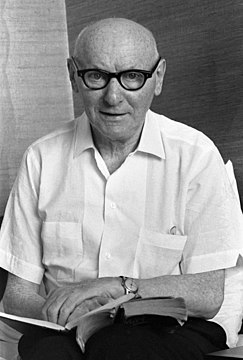

Isaac Bashevis Singer [1904-1991].
Có một nhà văn nào lại không từng phải chịu sự sỉ nhục của một loại in ấn? Nhưng đối với Isaac Bashevis Singer [1904-1991], cái lỗi “tipô” đặc biệt này lại là sự sỉ nhục lớn nhất, sự sỉ nhục cuối cùng: Nó ở trên mộ chí của ông!
Đối với một số bạn hữu của ông thì nó là một sự sỉ nhục độc ác, một lỗi lầm được khắc vào đá. Những người khác thì lại coi đó là một sự phi lý tức cười mà có thể là Singer lại cho là thú vị đấy. Bà vợ góa của ông, giống như một nhân vật của Singer, kỳ cục, lơ lửng trong cái thế giới riêng của bà, lại muốn cho chuyện qua đi.
Nhưng gần sáu năm sau cái chết của nhà văn Yiddish (tiếng Do Thái Trung và Đông Âu), người đã đoạt giải Nobel văn chương năm 1978, một người thợ khắc bia mộ cuối cùng đã phải sửa lại lỗi tipô này. Cuối cùng thì Singer là một người đoạt giải “Nobel” và không còn là một người đoạt giải “Noble” (cao quí) như là mộ chí của ông vẫn xưng từ năm 1922.
“Issac thường vẫn thích châm biếm”, Eve Friedman, đồng tác giả với vở kịch Teibele and her Demon, nói. “Nhưng có một cái gì thật tồi tệ trong chuyện này. Issac trong cái mộ chí này là cái bung xung cho mọi người đàm tiếu”.
Lỗi tipô khắc vào đá là một trong nhiều vấn đề đáng buồn trong câu chuyện bàn tán quanh nơi an nghỉ cuối cùng của Singer. Một vấn đề khác là sự tức giận của thân phận ông về vị trí ngôi mộ: Tại sao tác giả của Gimpel the Fool, người đã viết những truyện hài hước về những sự mập mờ của tình dục và cái chết, lại chỉ được chôn cất ở ngoại ô New Jersey, trong một khu nghĩa địa không được chăm nom?
Còn một chuyện nữa là điều mà gia đình ông không thể tin được, Singer, người được miêu tả như là một “Casanova Do Thái”, lại được đặt an nghỉ cách Walter Wassermann, người đã bị Singer cuỗm mất vợ, có ba mộ chí. Người đàn bà đó, Alma Singer, chết năm 1996, bây giờ nằm cạnh Singer, nhưng trong vòng mấy bước chân cách Wassermann.
Nếu là một truyện ngắn của Singer (như truyện The Re-encounter) thì Walter và Isaac nhất định là vẫn tiếp tục nhìn nhau trừng trừng qua các bụi thủy tùng.
“Họ khó mà sống chung được với nhau khi sống, thế mà trớ trêu thay, họ lại là láng giềng của nhau khi chết”, cậu cháu ngoại của Alma Singer, Stephen Dujack nói.
Cái lỗi ti-pô khắc vào đá tại nghĩa trang Beth-El, đã được phát hiện từ mùa hè 1992 vào lúc khánh thành mộ chí trước mặt gia đình và bè bạn.
Roger Straus, một sáng lập viên của Farrar, Straus & Giroux, nhà xuất bản Singer, đã hoảng lên và kéo ngay bà Singer ra ngoài, và bảo bà: "Thật khủng khiếp, làm thế nào bây giờ?". Nhưng bà Singer đã trả lời ông ngay rằng “Noble” (cao quí) là “một từ cũng chấp nhận được” theo lời Straus kể lại.
Câu chuyện bắt đầu ở một nơi nghỉ mát ở Catskills, Alma Wassermann lúc đó 30 tuổi, một phụ nữ tị nạn, gốc Đức, chải chuốt, có chồng là là Walter Wassermann, một nhà kinh doanh giàu có. Họ đã có với nhau hai mặt con. Gia đình vừa mới trốn khỏi nước Đức Quốc xã tới sinh sống ở Manhattan. Mùa hè 1937, họ đi nghỉ tại một trang trại ở Mountaindate, New York. Gần đó là Green Fields, một khu nhà văn Do Thái, nơi mà Singer, 33 tuổi, con trai một giáo sĩ gốc Do Thái ở Wacsava vừa mới nhập cư, đang ở.
Bà Wassermann và Singer trở thành đôi bạn, và cùng nhau đi dạo hàng giờ liền cùng với những đứa con của bà Wassermann. Mối quan hệ tiếp tục sau kỳ nghỉ, họ bí mật gặp gỡ nhau tại thư viện New York và phát triển thành một chuyện tình lãng mạn. Đến 1940, bà Wassermann bỏ chồng và các con là Inge, 10 tuổi và Klaus, 6 tuổi, để lấy Singer.
“Tôi chỉ cảm thấy là tôi phải sống phần còn lại của đời tôi với Singer nên tôi phải bỏ chồng và các con”, Alma Singer sau này đã nói với Janet Hadda, tác giả cuốn Isaac Bashevis Singer. Một cuộc đời như vậy.
Inge, con gái của Alma, đã không bao giờ tha thứ cho mẹ. Inge lớn lên và lấy Raymond Dujack, nay là một nhà kinh tế học và sống ở thành phố nhỏ Emerson ở New Jersey.
Năm 1964, Walter Wassermann, cha của Inge chết. Inge vốn rất yêu thích Nghĩa trang Beth gần đó, đã mua bốn lô đất nhỏ ở gần một gốc cây và chôn cất cha mình trong một lô đất đó. Năm 1990, Inge chết vì ung thư ở tuổi 60 và cũng được chôn cất ở phía trước cha mình. Alma, mẹ của Inge, lúc đó đã lấy Singer được một nửa thế kỷ rồi, đã không tới thăm nom con gái đau ốm được và Inge đã được một người bạn láng giềng Lead Feingold săn sóc.
Năm 1991, Singer mất. Bà Singer đã nhờ Feingold tìm cho một mảnh đất để an táng Isaac. Và cả một mảnh nữa cho bà sau này. “Bà ấy bảo muốn nó càng gần Inge bao nhiêu càng tốt bấy nhiêu”, Feingold nói. “Bà ấy đã mắc nhiều tội lỗi đối với con gái. Một lô tội lỗi”.
Thế là Feingold đã tìm đất chôn cất cho người đoạt giải Nobel, chỉ cách mộ của Wassermann, chồng cũ của Alma, có ba mộ chí mà thôi. Feingold nói: “Bà Alma đã không lấy làm phiền về chuyện này”.
Tại lễ khánh thành vào năm sau, gia đình đã thấy cái lỗi tipô “Nobel” - và hai lỗi khác ở tấm bia nhỏ hơn ở chân mộ. Ở tấm bia nhỏ này, “Nobel” cũng bị đánh thành “Noble”, và tồi tệ hơn, ít nhất là theo quan điểm của bà Singer, là tên giữa “Bashevis” của chồng bà bị thiếu mất chữ “h”.
Bà Singer đã phàn nàn với công ty Shastone Memorial ở New York, công ty đã chế tác cả hai tấm mộ chí đó. Shastone cãi lại rằng chính bà Singer đã viết cả hai chữ “Noble” và “Basevis” cho họ làm và đã đưa ra các tài liệu cho thấy là bà đã ký chấp thuận bản vẽ thiết kế các tấm đá với tất cả ba lỗi kể trên.
Sau nhiều lần trách cứ lẫn nhau, vào tháng 6/1993, gia đình Singer cũng đã chi ra 430 USD để Shastone thay tấm bia ở chân mộ bằng một tấm bia khác sửa lại cho đúng. Thế nhưng chữ “Noble” ở tấm bia lớn còn y nguyên.
Năm 1996, sau khi Alma chết, Susan Dujack, cô cháu ngoại của Alma, đã mời một luật sư. Lập tức, Shastone nói là họ có thể thay bia lớn ngay với giá là 620 USD, nhưng phải có sự đồng ý của hai người thừa kế khác, Stephen Dujack, cậu cháu ngoại của Alma và Klaus Wassermann, em trai của Inge Wassermann đã nhanh chóng đồng ý, nhưng Stephen Dujack lại ngăn trở, viện lý: “Alma đã không muốn thay đổi nó. Vậy tại sao tôi lại phải can thiệp vào lịch sử? Nó đã ngẫu nhiên xảy ra mà”.
Nhưng cuối cùng câu chuyện đã được dàn xếp ổn thỏa. Ngày thứ Tư 18/6 tại nghĩa trang Beth-El, dưới bầu trời u ám, một người thợ khắc bia tên là Read Frankel đã quỳ xuống bên mộ Singer và cẩn thận khoan bỏ đi cái quá khứ này.
Singer thích thú hay bực mình vì sự om sòm quanh cái mộ chí của ông đây? Một đầu mối có thể nằm trong truyện ngắnThe Re-encounter. Một nhân vật chết nói: “Trong tất cả những sự tan vỡ ảo tưởng của tôi, sự bất tử là cái lớn nhất”.